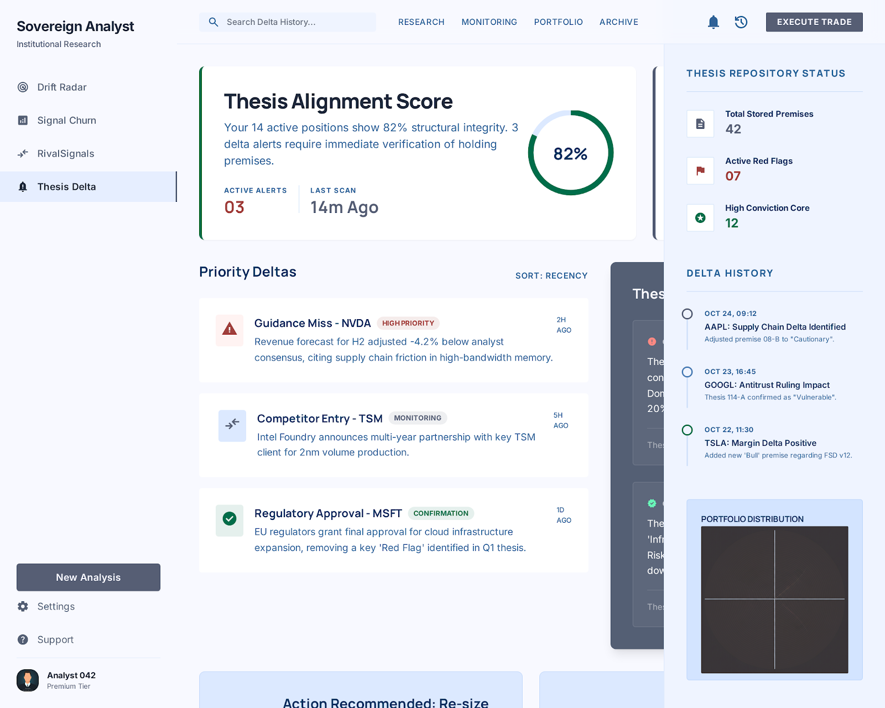

PF SAFE DEMO · 2026-02-23-p001
Thesis Delta Alerts
Monitor what changed against an original thesis so signal drift becomes obvious before conviction quietly decays.
ingest status
Imported from Stitch exportStitch output is archived as a source artifact while the live PF demo serves a local safe wrapper with the approved screen.
- Source preserved as local artifact
- Public demo path avoids remote CDN dependency
- Preview uses the shipped Stitch screen
